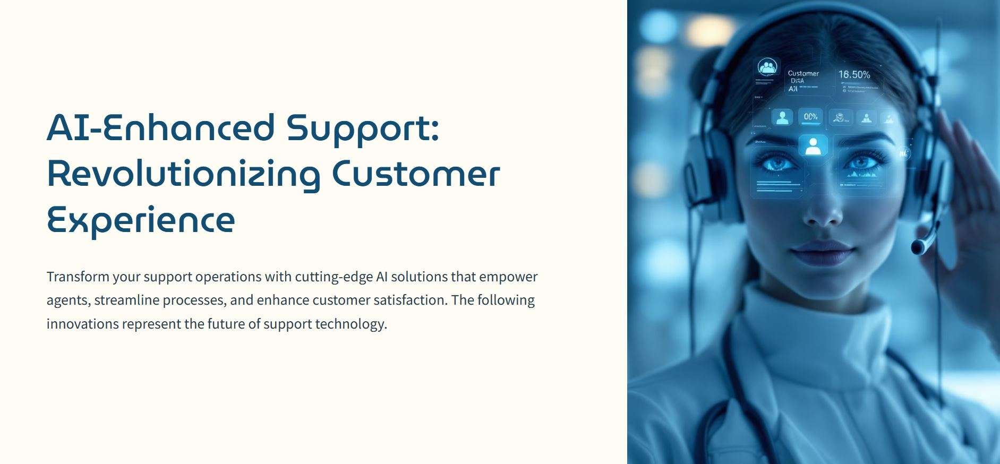
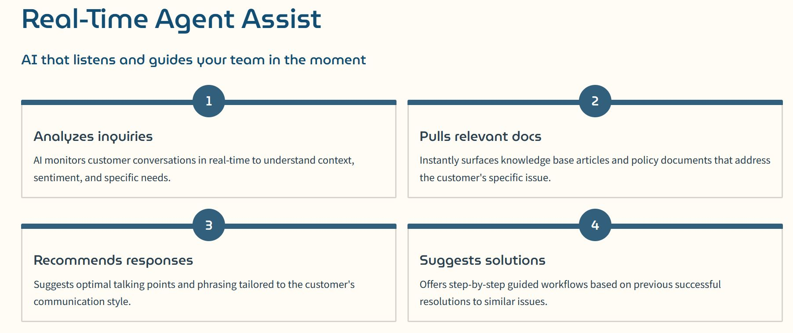

Customer Support: From Cost Center to Competitive Advantage
AI-powered customer support transformation in action
Customer support is no longer just a cost center — it's a competitive advantage.
Thanks to rapid advances in artificial intelligence, businesses can now deliver fast, personalized, and consistently excellent customer service at scale. Strategic AI integration doesn't just automate tasks — it enhances agent productivity, reduces costs, and builds long-term loyalty.
Below are six powerful, AI-driven strategies transforming how top companies approach support — helping them resolve problems faster, delight customers more consistently, and scale operations without sacrificing quality.

The complete AI customer support transformation framework
1. Real-Time Agent Assist: Your AI-Powered Co-Pilot
Imagine an AI that listens live as your agents engage customers—instantly analyzing inquiries, surfacing relevant knowledge, and recommending precise, company-specific responses and workflows.
This real-time assistance can reduce average handle time by up to 30%, while boosting first-contact resolution and agent confidence.
Why this matters:
• Accelerate resolutions and reduce customer wait times
• Onboard new agents faster with built-in coaching
• Ensure consistent, brand-aligned interactions that build trust
Top tools: Cresta, Observe.AI, Zendesk AI Agent Workspace
2. Knowledge Management 2.0: AI That Keeps Your Team Sharp
Your knowledge base is your team's secret weapon — but only if it's current, accessible, and easy to navigate.
Generative AI helps you:
• Automatically update and rewrite articles to reflect policy changes
• Enable semantic search that finds concepts, not just keywords
• Detect knowledge gaps from unresolved tickets and agent feedback
Why it matters:
• Keep your team empowered with fresh, relevant info
• Reduce escalations caused by misinformation
• Improve overall support quality and speed
Top tools: Guru + AI Assist, Notion AI, Helpjuice
3. AI-Powered Training & Onboarding: Personalization at Scale
Traditional training is slow, expensive, and often forgotten.
AI-driven training enables:
• Interactive chat simulations tailored to real scenarios
• Real-time coaching during live conversations
• Custom quiz creation from your actual documentation

AI-powered training modules that adapt to individual learning patterns
Why it matters:
• Accelerate new hire readiness dramatically
• Continually upskill your team with bite-sized learning
• Reduce training costs while improving knowledge retention
Top tools: Spekit, Trainual, Learn.xyz
4. Sentiment & Trend Detection: Stop Problems Before They Escalate
Your customers' words are a goldmine of insights — if you know how to read them.
AI-powered sentiment analysis lets you:
• Spot emerging issues before call volume spikes
• Surface hidden frustrations, bugs, and workflow bottlenecks
• Track shifts in tone across channels for targeted responses
Why it matters:
• Proactively fix issues and improve CX
• Inform product and process improvements
• Reduce escalation rates and improve agent morale
Top tools: Chattermill, Thematic, Tethr
5. Automated Ticket Routing & Triage: Faster Resolution, Less Hassle
Ensure every request reaches the right expert the first time.
AI-powered triage can:
• Categorize tickets automatically based on content
• Route requests intelligently across channels and teams
• Predict resolutions or suggest self-service to deflect volume
Why it matters:
• Slash wait times and reduce handoffs
• Boost agent productivity and satisfaction
• Deliver faster, more accurate customer service
Top tools: Forethought, Moveworks, Kustomer IQ
6. AI Deflection with a Human Touch: Smarter Chatbots
Modern chatbots do more than follow scripts — they truly understand and engage.
Today's AI-powered bots can:
• Interpret intent and ask clarifying questions
• Guide users to precise answers using dynamic knowledge
• Seamlessly escalate complex cases to humans
End-to-end AI customer support ecosystem delivering measurable results
Why it matters:
• Provide 24/7 support with personalized experiences
• Deflect simple issues to reduce agent load
• Maintain brand voice and customer satisfaction
Top tools: Intercom Fin, Ada, Drift GPT
Strategic AI Integration: The Winning Formula
AI is not a plug-and-play magic bullet — it's a co-pilot that gets smarter with the right foundation.
Successful organizations:
• Feed AI with rich internal knowledge and data
• Train agents on effective AI prompting and collaboration
• Continuously monitor AI impact and optimize workflows
The future of customer support belongs to those who wield AI strategically — boosting both customer satisfaction and operational efficiency.
Want to dive deeper? Read the full article with detailed implementation strategies and case studies on LinkedIn.
Sources
• Zendesk CX Trends 2024
• McKinsey & Company: The State of AI in Customer Care
• Harvard Business Review: The AI-Powered Contact Center
• Salesforce State of Service Report 2023